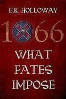

These are from my early days as a writer.
Please now find me on my Anna Stuart Instagram account.
Fab historical writers – G K Holloway
G K Holloway has published one novel so far, but it's a big one: 1066 What Fates Impose. The title alone should give anyone should have a rough idea of what it’s about, but in essence it covers the twenty-one years leading up to the Battle of Hastings. There are papal plots, family feuds, court intrigues, assassinations, loyalties, betrayals, a love triangle, and, of course, a few battles. There are some dark and bloody moments but to offset these, and to avoid writing a book that was all doom and gloom, he added celebrations, feasts, weddings and a dash of romance.
The tale is told from the English point of view but there are a host of characters from Normandy, Denmark, Norway and Rome, to keep a reader interested and entertained. It was rated 'Highly Recommended' by the Historical Novel Society and won a Wishing Shelf Gold Medal for Adult Fiction in 2014.
I met Glynn at the Battle of Hastings re-enactment three years ago and again at all subsequent events (See below for a slightly mad picture of me, Glynn, James Aitcheson and Justin Hill) and he is a charming and highly knowledgeable writer. His novel is an imposing and hugely comprehensive view of the years up to 1066 and I can't wait to see what he is going to produce as a sequel. For now, though, a little more about him as a writer:

Even as a kid, I fancied myself as a writer. Well, not so much a writer, as someone who told stories. I’ve always loved stories, and it really didn’t make any difference if it was a play, a film, the news, a parable from the bible, a novel, a programme on radio, TV, cinema, whatever. I can remember telling my careers officer in school, an author is what I’d like to be. When he finished laughing, we discussed more sensible options. So, a more sensible option was what I plumbed for, and years later I had a change of plan. We were in a position as a family, were we could afford for me to write, more or less, full time. This was about the same time as I finished reading, The Last Anglo Saxon King, by Ian W Walker, and this really fired my interest in the period. I’m a history graduate and love history but my knowledge of England before the Norman Conquest was definitely nothing to brag about. But Walker’s book about the period pre-1066 captured my imagination, so much so, that I read anything about the era I could get my hands on. I even went to Anglo Saxon history evening classes.
I found the whole Anglo Saxon age exciting, but the last twenty years especially and I just had to write a book about it. 1066 What Fates Impose, is the result.
What’s your favourite thing about being a writer?
This is a difficult question to answer, there are so many enjoyable things about being a writer, I’m hard pushed to say what’s my favourite, so I’ll list them all.
Holding a book in my hand for the first time and seeing my name splashed across the front is deeply satisfying. Obviously, I’ll have seen the artwork and read the final proofs but it’s just not the same as having a finished copy in my hand. Ebooks just don’t give me the same feeling. Seeing my book on kindle is thrilling but it feels somehow as though I haven’t quite made it. Feeling the weight of printed paper, to me, confirms the fact I have, after years of hard work, published a book and I have the indisputable evidence in my hand.
Ebooks just don’t give me the same feeling. Seeing my book on kindle is thrilling but it feels somehow as though I haven’t quite made it. Feeling the weight of printed paper, to me, confirms the fact I have, after years of hard work, published a book and I have the indisputable evidence in my hand.
I also derive a lot of pleasure from meeting people. If you’d told me before I started, writing a book is a great way to meet people, I’d probably have laughed. My idea of writers was that they spent all their time alone slumped over a keyboard, and there is a great deal of truth in that. However, going to festivals you meet all sorts of people - readers, reenactors, event organisers and other writers, which is always a pleasure. Everyone has something interesting to say and I’m asked questions I’ve never anticipated.
And your least favourite?
Writing. There is a point where it becomes a real chore. I love having the initial ideas and the inspiration that comes to me out of nowhere. Especially if I’m writing what I thought was going to be a difficult passage and then, hey presto, a whole scenario presents itself and characters spring to life. For me, this usually happens when I go for a walk, when you get a rhythm going, the inspiration starts flowing. And I love ideas forming in my head in dreams – I must have pen and paper handy by my bedside. But I find the nitty gritty of weaving it all together time consuming and tiresome, particularly if I’m on the umpteenth rewrite. And it just seems to take so long.
Why were you drawn to the pre-conquest years?
The years before the Norman Conquest are interesting, exciting and the ramifications echo down through the centuries. There are so many times when things could have worked out very differently.
I know that can be said of about almost any event in history but the lead up to Hastings is full of them, right up to the day of the battle itself, and even the final minutes. It’s edge of the seat, nail biting stuff and the outcome of the battle dramatically changed the course of England’s history.
Are there any other periods in history you fancy tackling?
Yes, lots. Apart from the half a dozen or so books I want to write about Anglo Saxon England there is a lot of potential for the English Civil War and plenty of scope for counter factual historical fiction in any era.
As a historian, why didn’t you write a history book rather than a historical novel?
As much as I like history I recognise that other people don’t share my interest in the subject – or do they?
It seems to me an awful lot of people say they don’t like history and yet, when you ask them about films they’ve seen, the books they’ve read or the television series they may have followed, they reveal quite an enthusiasm. I think many people see history as a lot of dreary dusty text books full of dry facts and footnotes. They are often quite right, not always, but often enough to put them off reading a text book. So, a more interesting option is to pick up a novel.  People who would turn their nose up at reading a text book on the Peninsula War, might turn out to be quite keen to read a Sharpe book. Why? Because it’ll be full of characters they can relate too and the two-hundred years distance between then and now, will have been closed by history that has been brought to life.
People who would turn their nose up at reading a text book on the Peninsula War, might turn out to be quite keen to read a Sharpe book. Why? Because it’ll be full of characters they can relate too and the two-hundred years distance between then and now, will have been closed by history that has been brought to life.
What, then, do you think is the appeal of historical fiction?
Readers can immerse themselves in a world of adventure, skulduggery, plotting, scheming, and striving, set amongst the great, the good and the obscure, in fact everything that makes up the world at any time, and have the satisfaction of knowing they’re reading about something as it might have happened. So, not only are readers entertained, they’re learning something too.
If there was one thing in history, you could change what would it be?
With apologies to all those Anglo-Saxon fans out there, worse things have happened than the English losing the Battle of Hastings. I think Adolf Hitler meeting his end in the First World War trenches would have been a positive thing. There may still have been a war in 1939 but I think it would have been of a different nature and on a smaller scale.
You can buy Glynn's novel here, or look him up on his website or amazon page. You can also connect with him on twitter and facebook.